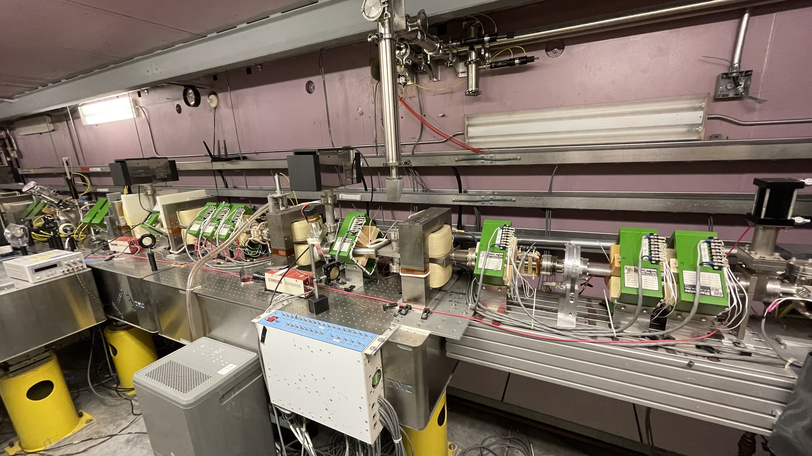
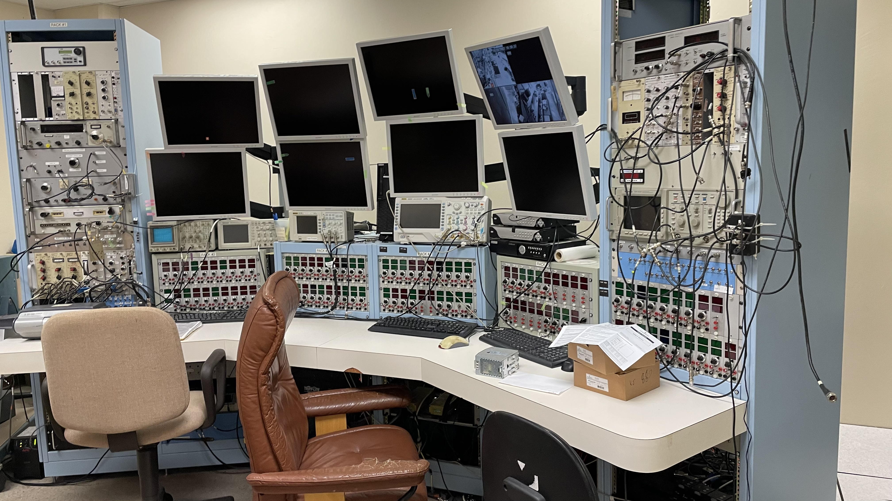

UHM's Free-Electron Laser (FEL)
Current Research
2024 timeline to recommissioning the electron linac:
-
Arrival of two new faculty staff (Siqi Li and Niels Bidault)
-
High-voltage conditioning
-
Exchange of an amplifier to drive the klystron
-
Fixing of vacuum leaks
-
Fabrication of a new cathode for the RF gun
Still ongoing:
-
Identification of a few remaining vacuum leaks
-
Considering SF6 injection in the waveguide
-
Renewal of the control systems
-
Beam dynamics simulations of the beamline
-
Identification of the control systems to renew

Short-to-mid term program for the linac/FEL:
ESPCOR grant:
-
Development of the FEL oscillator simulation
-
Incorporation of machine learning based algorithms for accelerator control
-
Workforce development to train students and early-career researchers
Documentation:
-
Development of a new eLogbook
-
Digitalization of the archive materials and new CAD model of the beamline
Control systems:
-
Consolidation of the hardware and software for controlling the Thyratron
-
Development of new applications for the Klystron and magnets for beam transport
-
Implementation of optimization methods using beam dynamics simulations and ML tools
Beam diagnostics:
-
Recalibration and analysis of the limiting performances for further beam optimization
-
Possible technology transfer from other laboratories or organizations (CERN)
Other technical aspects:
-
Commission a new method to avoid multipactoring in the waveguide
-
Renew the vacuum systems---essentially, pumps and controllers
